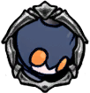

Lance Sentry
 Winged Sentry of Hallownest equipped with a nail-lance. Charges at threats or throws its lance from a distance.This devious foe will often keep its distance and try to pick you off with its thrown weapons. When it charges at you, leap up and strike it down.
Winged Sentry of Hallownest equipped with a nail-lance. Charges at threats or throws its lance from a distance.This devious foe will often keep its distance and try to pick you off with its thrown weapons. When it charges at you, leap up and strike it down.

x 12
x 18
 x 30
x 30The Lance Sentry is a flying enemy found in the City of Tears. It is similar in design to many of the other sentries found in the same location.

 The Lance Sentry will hover at a good distance and slightly above the players location, until it decides to perform one of its two attacks.For its lance throw, a Lance sentry will pull back its lance before throwing it at the player. The lance travels in a straight line, sticking in the ground where it lands. It is safe to touch after it hits a surface.Its other attack is to quickly drop down to the player's level, before flying horizontally for a ways with its lance stuck out in front of it.
Shade Soul is probably the fastest way to deal with Lance Sentries, and can be particularly useful when you have a large amount of enemies and need to cut down on the number of threats quickly.Barring spells, the safest way to deal with a Lance Sentry is to dodge their spears while waiting for their charge attack. When they charge, simply jump over them and hit them with a downwards strike.Lance Sentries will tend to avoid being close to the player, but it is possible to chase after them and hit them while they are retreating or performing a lance throw.Otherwise, keep in motion to avoid the thrown lances, or use cover.
The Lance Sentry will hover at a good distance and slightly above the players location, until it decides to perform one of its two attacks.For its lance throw, a Lance sentry will pull back its lance before throwing it at the player. The lance travels in a straight line, sticking in the ground where it lands. It is safe to touch after it hits a surface.Its other attack is to quickly drop down to the player's level, before flying horizontally for a ways with its lance stuck out in front of it.
Shade Soul is probably the fastest way to deal with Lance Sentries, and can be particularly useful when you have a large amount of enemies and need to cut down on the number of threats quickly.Barring spells, the safest way to deal with a Lance Sentry is to dodge their spears while waiting for their charge attack. When they charge, simply jump over them and hit them with a downwards strike.Lance Sentries will tend to avoid being close to the player, but it is possible to chase after them and hit them while they are retreating or performing a lance throw.Otherwise, keep in motion to avoid the thrown lances, or use cover.
Lance Sentrys can be found the following areas: